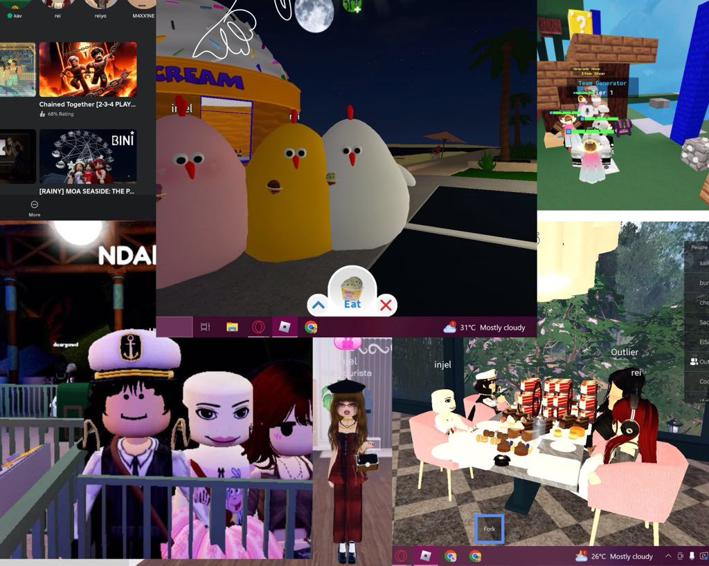
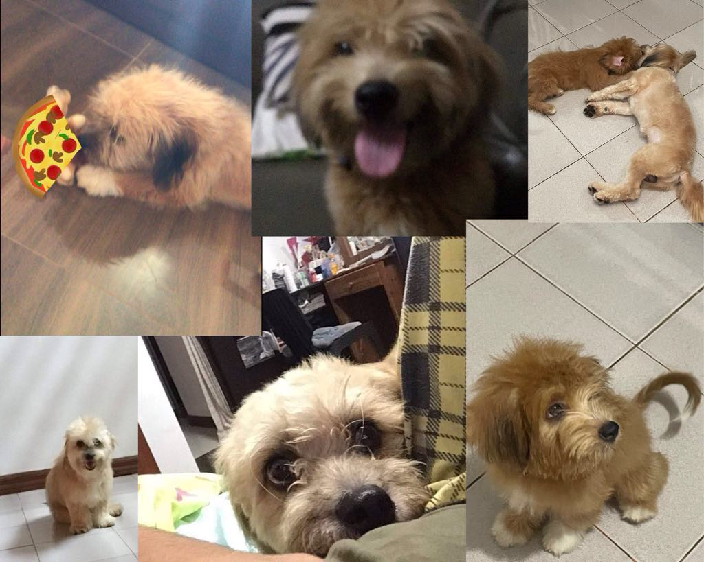
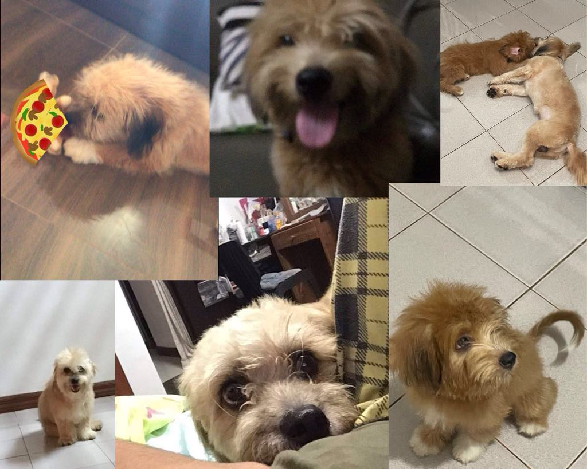
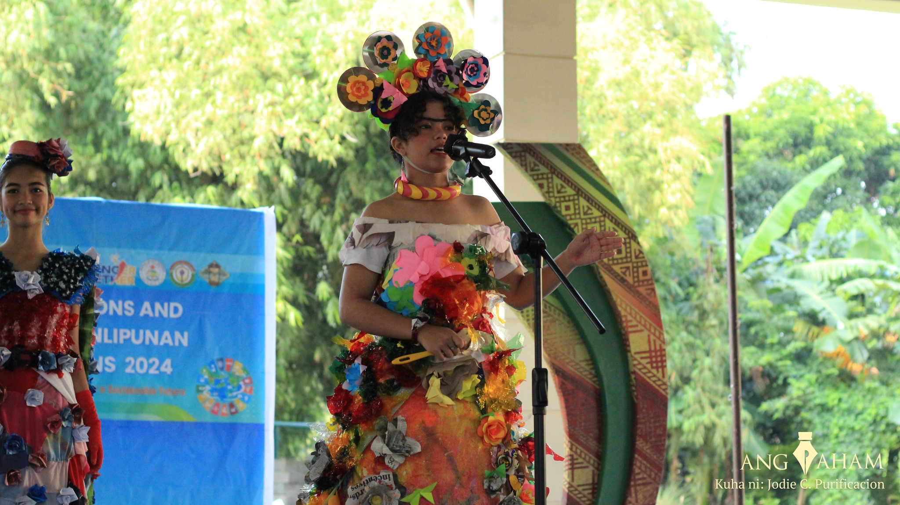
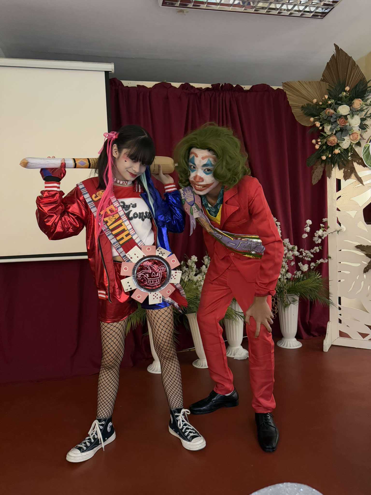
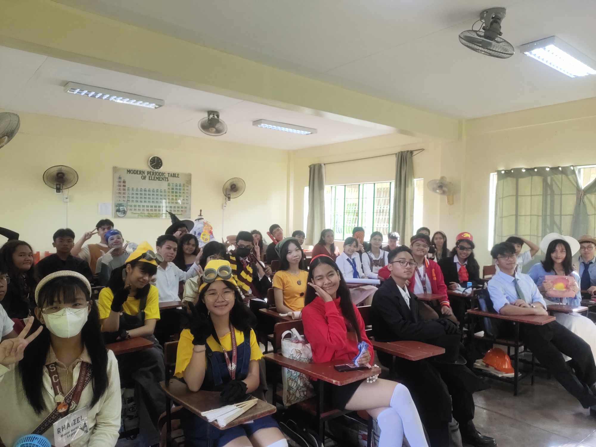
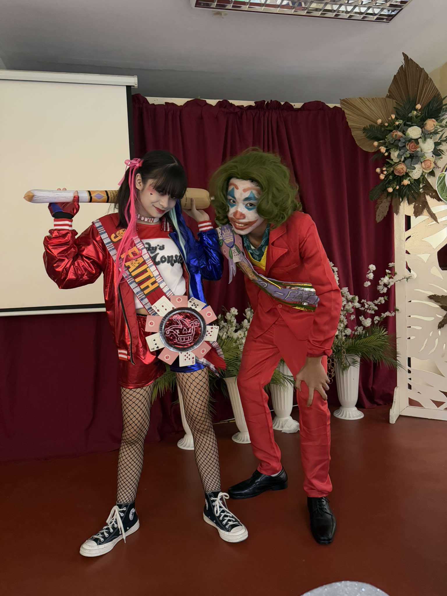
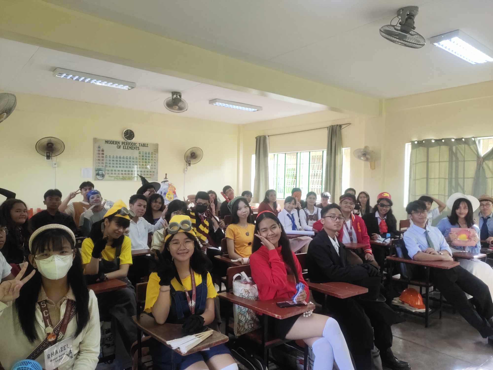

How are you feeling today?
Hello! my name is Angel Cyrill C. Pareja, I am 15 years old and my Birthday is September 28, 2009. My favorite color is yellow and my hobbies are playing with my friends and collecting anik-aniks and sleeping :P.
My Family

Some gameplays with my friends(●'◡'●)

My Dogs🐶

.・゜Lessons゜・


'*•.¸♡Reflection♡¸.•*'
My Dogs🐶

.・゜Lessons゜・
'*•.¸♡Reflection♡¸.•*'
.・゜Lessons゜・
'*•.¸♡Reflection♡¸.•*'
This grade 9 the lessons are more focused on coding, I've learned so much new attributes and it can get confusing at times, but my friends are there to help. and ms Uminga who teaches very well. but since theres so much stuff to memorize I get lost.either ways I quite like learning about all these things because I've learned that this is something really important in the digital world, and I'm usually on my devices most of the time.so it's fun to learn about what goes behind the coding process. Overall this first quarter of ICT was a rollercoaster because there are times where I do get the lesson but there are also times where I just get mental blocked and forget everything especially in the hand-on, even if i review once I start the coding I forget the attributes to use because the nervousness takes over.
⋆˚Second Quarter𝜗𝜚˚⋆
𐙚🧸ྀི for this second quarter i would like to start my portfolio by giving u one of my favorite song that u can play as bg music hehe𐙚🧸ྀི<
⋅˚₊ 𙚠‧Here are just some random things about me heheheh⋅‧₊˚ ⋅
I love the ppop girl group BINI
My favorite color is yellow
I love playing with my friends
Im an introvert
⋆˚Teachers Day𝜗𝜚˚⋆

⋆˚Historical Icon𝜗𝜚˚⋆

⋆˚Booklandia𝜗𝜚˚⋆

⋆˚Book parade𝜗𝜚˚⋆

⋆˚Intrams𝜗𝜚˚⋆
⋆˚Booklandia𝜗𝜚˚⋆

⋆˚Book parade𝜗𝜚˚⋆

⋆˚Intrams𝜗𝜚˚⋆
⋆˚Intrams𝜗𝜚˚⋆
⋅˚₊ 𙚠Scream compilation w/ Franielle Sales⋅‧₊˚ ⋅
⋅˚₊ 𙚠fav video of my bias in bini⋅‧₊˚ ⋅
This 2nd quarter has been a struggle for me cause i just can't seem to understand the lessons, well I mean i could memorize the definitions and stuff for the tests but when it comes to coding my brain just cant take it hehe. I really do try to practice but i still find it a hard time to remember the tags and all those sort of stuff. But I would like to thank my friends for helping me try to understand the lessons even if i coud get really annoying at times. and ofcourse ms Uminga for teaching us all the lessons that we could use for our codes.
⋅˚₊ 𙚠THATS IT BAIIIIIIII!!!! (see u 3rd quarter..........NOOOOOOO)⋅‧₊˚ ⋅
'*•.¸♡Reflection♡¸.•*'
This 2nd quarter has been a struggle for me cause i just can't seem to understand the lessons, well I mean i could memorize the definitions and stuff for the tests but when it comes to coding my brain just cant take it hehe. I really do try to practice but i still find it a hard time to remember the tags and all those sort of stuff. But I would like to thank my friends for helping me try to understand the lessons even if i coud get really annoying at times. and ofcourse ms Uminga for teaching us all the lessons that we could use for our codes.